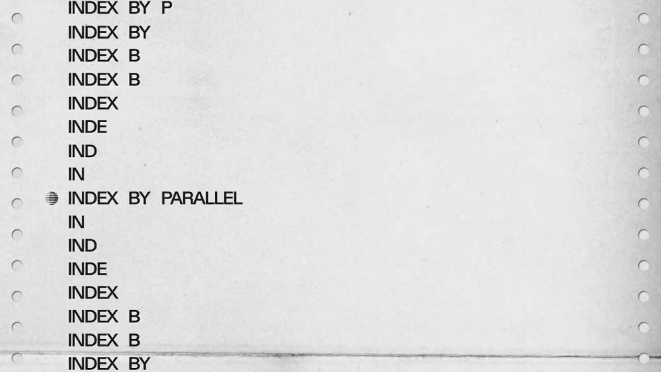
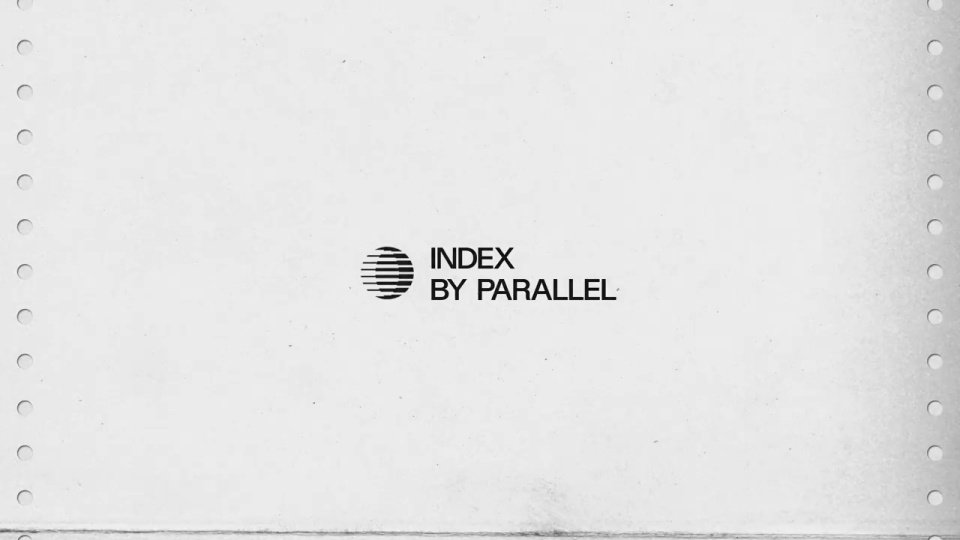

Parallel Web Systems / V199
Parallel Index — get paid when AI uses your content
用节点的组织方式讲网络变化：先是开放连接，再出现新的访问者，随后从单次访问扩成大规模流量，最终收成索引标志。
构图与编排 可播放 · 可替换内容
整体编排规则示例
查看 HTML 源码
<!doctype html><html lang="zh-CN"><meta charset="utf-8"><meta name="viewport" content="width=device-width,initial-scale=1"><title>Parallel Index — get paid when AI uses your content · sequence</title><style>html,body{margin:0;width:100%;height:100%;overflow:hidden;background:#efeee9}canvas{display:block;width:100%;height:100%;object-fit:contain}</style><body data-mode="sequence"><canvas width="1000" height="600"></canvas><script src="data.js"></script><script src="common.js"></script><script src="scene.js"></script><script src="bridge.js"></script></body></html>画面元素纸面网络节点连线橙色节点点阵地球网格索引纹样品牌字
MOTION LANGUAGE
动作与构图
局部动作 · 构图规则
01
早期网络用稀疏连接讲清楚
纸白底上将几个彩色节点围绕中心摆开，细线形成关系。历史感来自小字、纸边和有限颜色，避免用密集装饰抢占节点。
02
新访问者改变同一套网络
新访问者改变同一套网络规则示例
查看 HTML 源码
<!doctype html><html lang="zh-CN"><meta charset="utf-8"><meta name="viewport" content="width=device-width,initial-scale=1"><title>Parallel Index — get paid when AI uses your content · sequence</title><style>html,body{margin:0;width:100%;height:100%;overflow:hidden;background:#efeee9}canvas{display:block;width:100%;height:100%;object-fit:contain}</style><body data-mode="clip" data-start="23" data-end="30"><canvas width="1000" height="600"></canvas><script src="data.js"></script><script src="common.js"></script><script src="scene.js"></script><script src="bridge.js"></script></body></html>橙色节点进入后，连线与流向重新安排。先展示一个请求，再增加到成排小点；节点颜色与位置要能解释角色变化。
03
数量增大时用组织形态换节奏
数量增大时用组织形态换节奏规则示例
查看 HTML 源码
<!doctype html><html lang="zh-CN"><meta charset="utf-8"><meta name="viewport" content="width=device-width,initial-scale=1"><title>Parallel Index — get paid when AI uses your content · sequence</title><style>html,body{margin:0;width:100%;height:100%;overflow:hidden;background:#efeee9}canvas{display:block;width:100%;height:100%;object-fit:contain}</style><body data-mode="clip" data-start="40" data-end="46"><canvas width="1000" height="600"></canvas><script src="data.js"></script><script src="common.js"></script><script src="scene.js"></script><script src="bridge.js"></script></body></html>单点、点阵、巨大的裁切圆、网格地球依次交接。黑白与橙色整场切换控制段落，形状仍围绕中心或固定轴线组织。
04
从网络规模收回创作者与代理
地球网格缩成条纹圆标，随后再把彩色个体加入网络。结尾恢复纸白与简短主张，让长片的最后一幕比中段清楚。
05
替换题材要保留角色与关系
可换其他基础设施叙事，但要先定义谁提供内容、谁发起访问、谁连接双方。品牌纹样从节点或线条推导，不突然插入无关标志。
SEQUENCE
段落与节奏
点击段落，定位到上方编排示意。


画面参考 · 离散静帧
KEEP THE RELATIONSHIPS
制作其他主题
- 替换网络角色、机制与品牌；保留稀疏连接→规模扩展→关系重组。
制作约束
纸面 / 网络节点 / 连线 / 橙色节点 / 点阵 / 地球网格 / 索引纹样 / 品牌字
- 纸白底上将几个彩色节点围绕中心摆开，细线形成关系。历史感来自小字、纸边和有限颜色，避免用密集装饰抢占节点。
- 橙色节点进入后，连线与流向重新安排。先展示一个请求，再增加到成排小点；节点颜色与位置要能解释角色变化。
- 单点、点阵、巨大的裁切圆、网格地球依次交接。黑白与橙色整场切换控制段落，形状仍围绕中心或固定轴线组织。
- 地球网格缩成条纹圆标，随后再把彩色个体加入网络。结尾恢复纸白与简短主张，让长片的最后一幕比中段清楚。
- 可换其他基础设施叙事，但要先定义谁提供内容、谁发起访问、谁连接双方。品牌纹样从节点或线条推导，不突然插入无关标志。